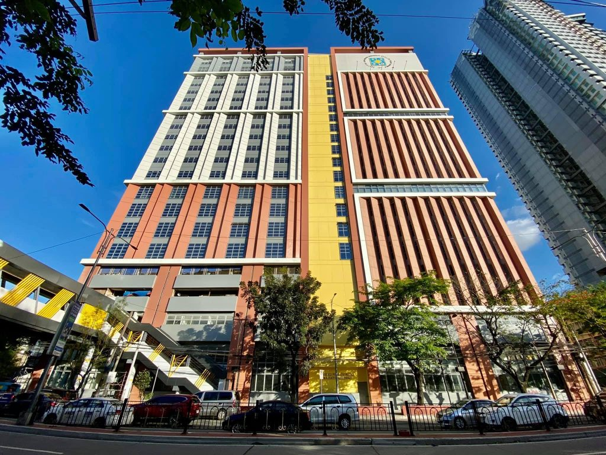
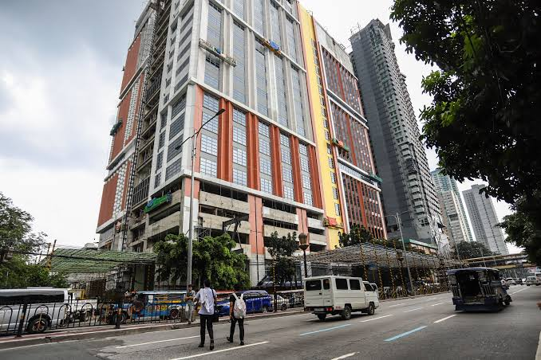

Vision
To be a leading center for information and computing education, research, and service in the region.
 UST CICS
UST CICS
Building skilled, ethical, and future-ready Thomasian computing professionals through quality education and community.
Explore Programs
UST CICS provides computing education grounded in innovation, service, and the University's Catholic and Thomasian values.
To be a leading center for information and computing education, research, and service in the region.
To form competent and responsible computing professionals who create meaningful solutions for society.
Choose a program that matches the way you want to build, manage, and apply technology.
Study algorithms, software development, data, and intelligent systems.
Learn MoreConnect business needs with practical and well-managed digital solutions.
Learn MoreDesign, deploy, and support networks, applications, and IT infrastructure.
Learn More2/F Frassati Bldg, UST España, Manila
+63-2-3406-1611 local 8518
cics@ust.edu.ph
Monday to Saturday
7:00 a.m. – 12:00 p.m.
1:00 p.m. – 5:00 p.m.
